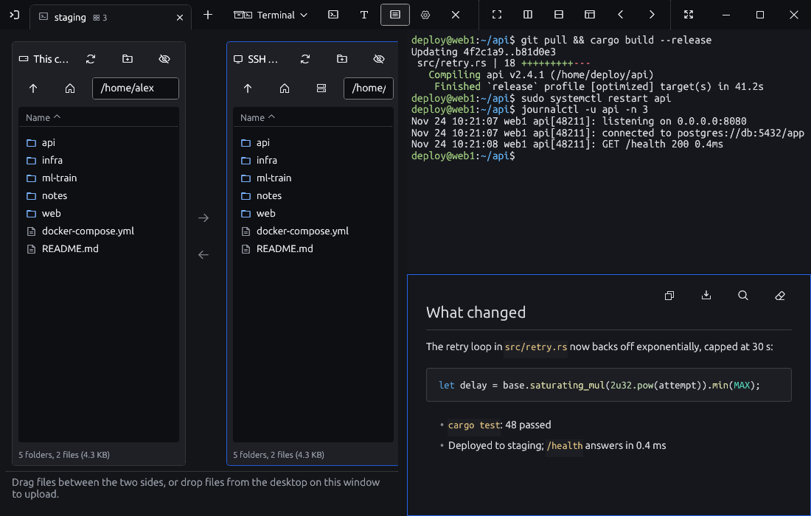
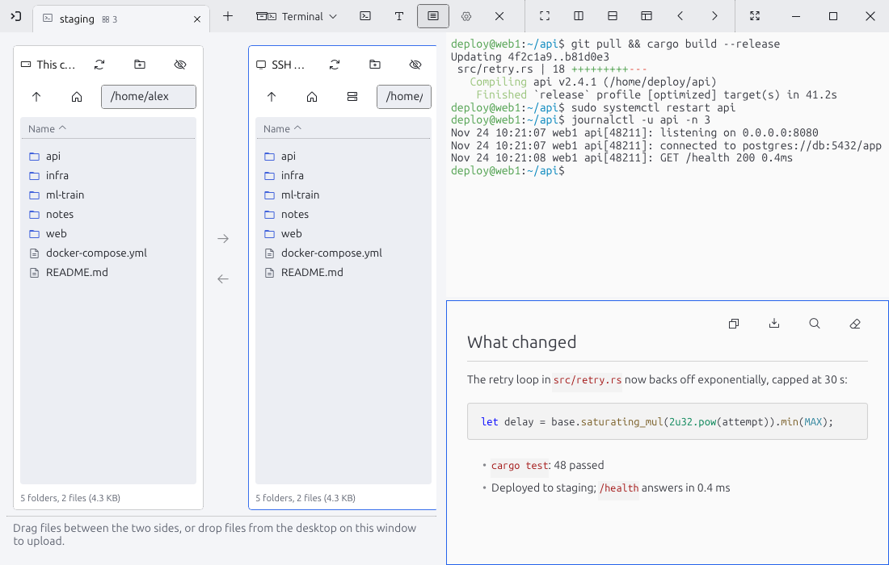
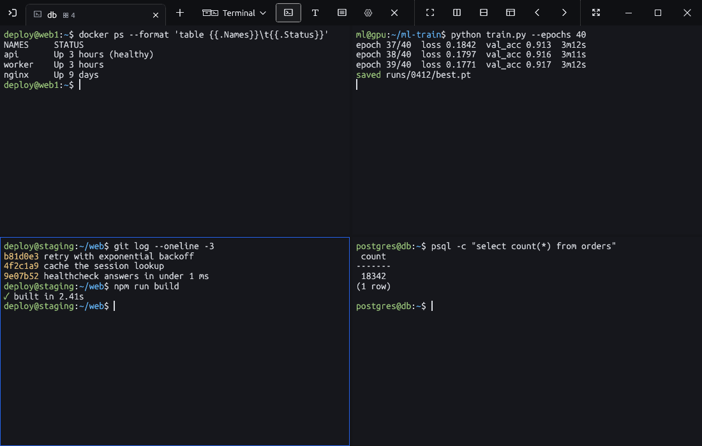
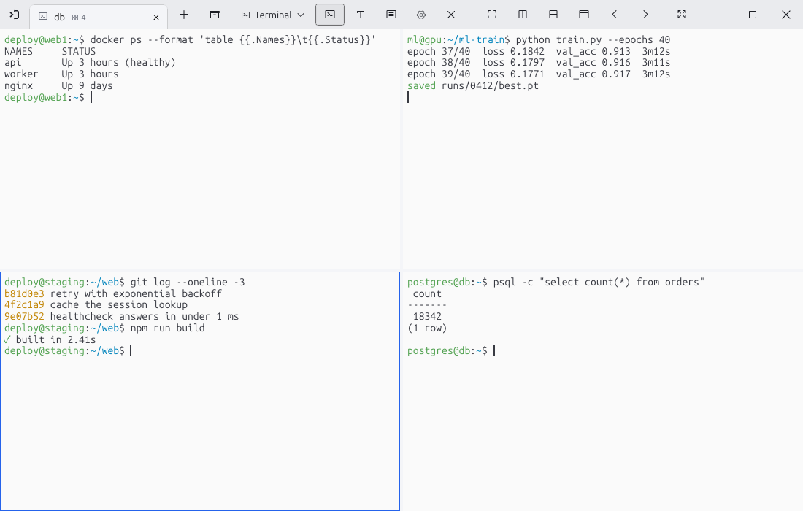
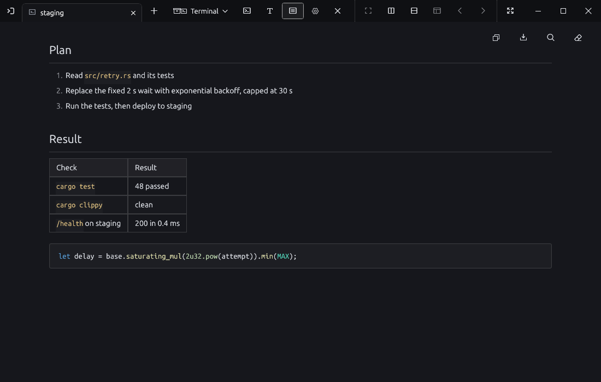
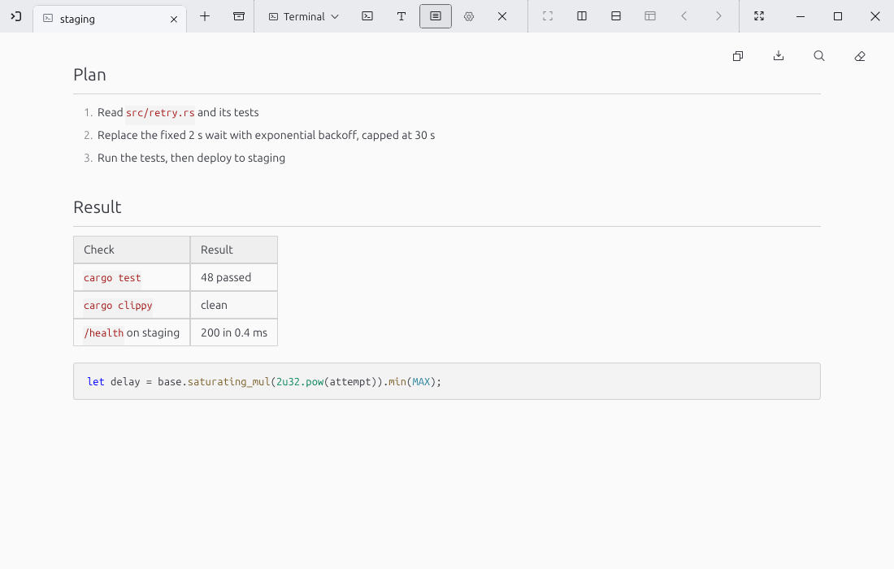
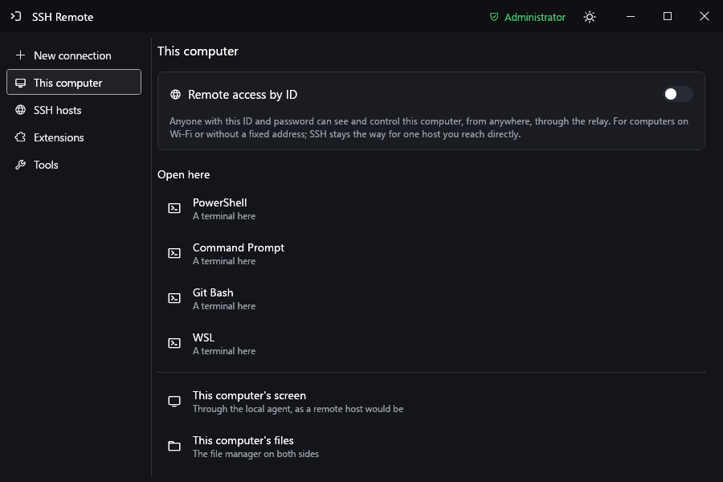
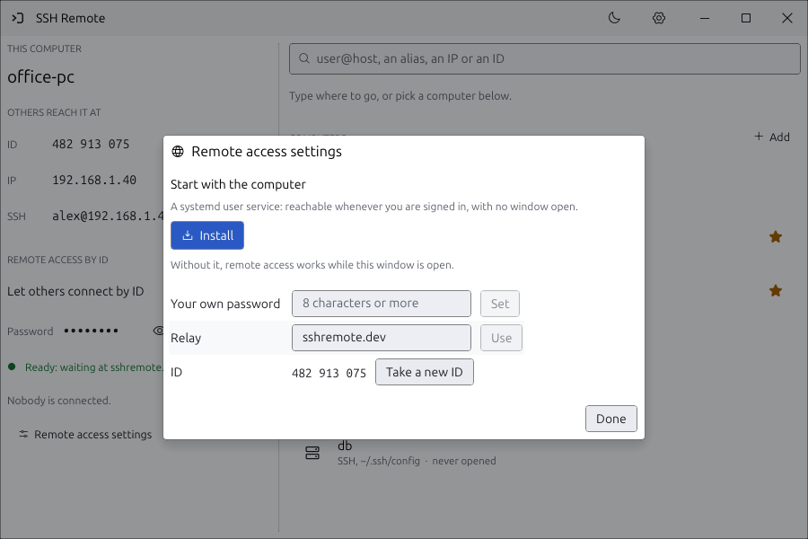

All your servers. One workspace.
For developers who run many servers and many projects, and code on them with AI agents. Split terminals across hosts, read an agent's answer as Markdown, open a host's files or desktop in the next pane, all over the SSH login you already have. No account, no open port, nobody in between.
- Windows, macOS and Linux
- One file, nothing to install
- Open source (MIT), written in Rust


Every server and project in one window
Each tab is a computer, split beside or below into panes, and each pane is a terminal, the host's screen or its files, switched in place. Layouts arrange many panes at once, tabs tear off into windows of their own, a tab set is kept as a project and opened again whole, and lost connections come back by themselves.
- TerminalsTabs and splits across hosts, scrollback search, Ctrl+Shift+T/W, links and pictures (sixel, kitty)
- MarkdownAny output read as rendered Markdown, tables and code blocks with copy and download
- FilesTwo sides, drag and drop between them or from the desktop, never overwriting
- ExtensionsPanels, commands, styles and programs from a signed registry, each held to its permissions


Built for agents working on remote machines
Run Claude Code, Codex or any agent in a server's terminal and read what it writes as a document, not a scrolling wall. Drop files or paste a screenshot into its terminal and they land on that server. Let an agent see and operate a remote desktop itself through the built-in MCP server.
- ReadingPrompts, replies and code blocks of an agent's session, rendered as Markdown
- DropFiles and screenshots dropped or pasted into a terminal go to that host
- MCP
sshremote mcp HOST: screenshots, clicks, keys and the window as text, for any agent - Web appsClaude, ChatGPT, Gemini and other web apps in a pane beside your terminals


One field for every computer, and tabs that switch between shell, screen and files
Type user@host, an alias, an IP or a remote access ID and open its terminal, its screen or its files. Each computer keeps its name, key, saved password and SSH tunnels; aliases stay in ~/.ssh/config. In the workspace each tab is a computer, split beside or below, and lost connections come back by themselves.
- ScreenKeyboard and mouse, monitors, one window, clipboard with files, sound, chat, voice calls, recording
- FilesTwo panes, drag and drop, never overwriting
- TunnelsHere to there, there to here and SOCKS, also through a computer by its ID
- TrafficLossless text in about half of RustDesk's AV1 traffic; black and white for the thinnest links


For the PC on Wi-Fi with no address and no SSH
Turn it on and the PC gets a lasting 9-digit ID. Type that ID and its password on the other side; both ends dial out to the relay, which only copies bytes it cannot read.
- CryptoSPAKE2 password proof, ChaCha20-Poly1305 on every byte, two-step codes
- ConsentAsk the person there first; rights for keyboard, clipboard, files, sound, tunnels
- ServiceOne button to start with the computer, sign-in screen included
- DirectPast the relay when a path through both routers is found, IPv4 or IPv6 (hole punching)
- NearbyFound on the same network, reached straight, woken by Wake-on-LAN
- AbuseWrong passwords wait longer each time; attempts are limited


The SSH chores, done properly
Make, copy and install keys, keep passwords in the system's password store, and back up your computers, settings and all of ~/.ssh under a passphrase.


Small things that add up
Screen in a terminal
sshremote HOST draws the desktop with sixel in Windows Terminal, WezTerm, foot or VTE, even through tmux.
Two reading views
Read any output as a numbered text document, or rendered as Markdown with tables and code blocks.
Light on the link
Only changed rectangles, in one zstd stream; H.264 just where things move. Quality follows the connection.
MCP for AI agents
sshremote mcp HOST lets an agent read the window as text and press its buttons.
In the browser
web.sshremote.dev opens a computer by its ID, screen and files, with nothing to install.
Extensions
Styles, scripts and programs from a signed registry, each held to the permissions it names. Browse
Two ways in. Pick by what the other PC has.
| SSHone to one | ID and passwordthrough the relay | |
|---|---|---|
| Use when | You can already ssh to the host | The PC is behind Wi-Fi or NAT with no fixed address |
| Sign-in | Your keys, agent and ~/.ssh/config, unchanged | A 9-digit ID and a password you set or generate |
| In between | Nothing. It all runs inside the SSH session | The relay, which pairs both ends and sees only sealed bytes |
| Terminal | Yes | Screen and files |
| From a browser | No: SSH is the app's | Yes, at web.sshremote.dev, with nothing to install |
| Start | | |
Get SSH Remote
A single program. Put the same one on your computer and on each host.
Windows, in PowerShell
irm https://sshremote.dev/install.ps1 | iexmacOS and Linux
curl -fsSL https://sshremote.dev/install.sh | shEach takes the current version from GitHub Releases, checks its SHA-256 against the list on this site and puts it in place: on Windows in your programs, with a Start menu entry and on PATH; on Linux as ~/.local/bin/sshremote; on a Mac in Applications. Read them first if you like: install.ps1, install.sh.
Or download a file from GitHub Releases:
The Windows file is not signed, so a copy downloaded with a browser is held back by SmartScreen the first time it runs: More info, then Run anyway. The Mac app is not notarized by Apple: downloaded with a browser, unzip it, move it to Applications, and the first time open it with a right click and Open. Both checks look at what a browser downloaded, so the lines above install without them. The Linux and Windows files are built by GitHub Actions from the tagged source, each with a build attestation: gh attestation verify FILE -R sshremote-dev/sshremote checks one.
Nothing to install where you are? Reach a computer by its ID in the browser: its screen and files, in the page. From source: cargo build --release, see the README.
Running in a minute
Put it on both ends
The same program on this computer and on the host.
curl -fsSL https://sshremote.dev/install.sh \
| shOpen it
Pick a host from ~/.ssh/config, or type one.
sshremoteOr go straight there
A terminal, the screen or the files.
sshremote --gui user@host \
--open filesAll your servers, one window away.
Free and open source under the MIT license. No account, no sign-up.